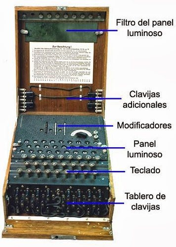
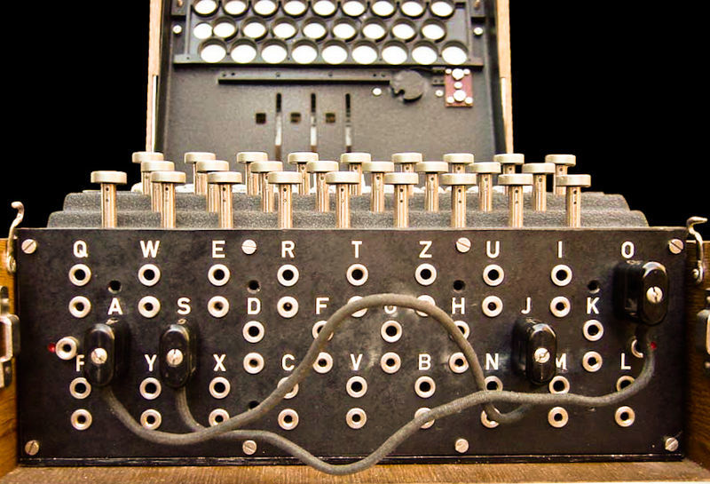
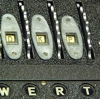
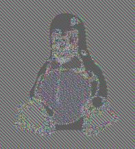
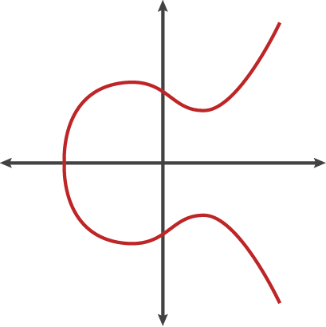
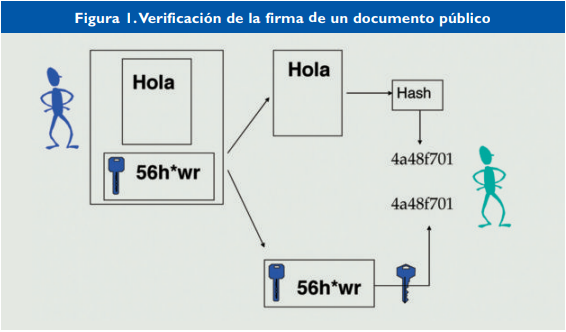
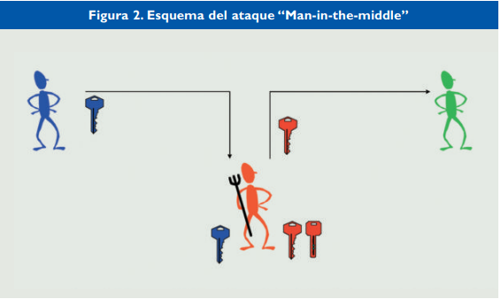

1. Introducció a la Criptografia
2. Història de la Criptografia
2.1. Criptografia a l’Antiguitat
2.2. Grècia i l’Imperi Romà
2.3. Edat Mitjana
2.4. Xifrat Polialfabètic
2.4.1. Xifrat d’Alberti
2.4.2. Xifrat de Vigènere
2.5. Edat Moderna
2.6. La segona guerra mundial
2.6.1. Màquina Enigma
2.6.1.1. Funcionament
2.7. El boom dels 80 i 90
2.8. En l’actualitat
3. Criptografia Clàssica
3.1. Xifratge Monoalfabètic
3.2. Xifratge Polialfabètic
3.3. Xifrat Cesar
3.4. Xifrat vigènere
3.5. Xifrat Alberti
3.6. Anàlisi de freqüència
4. Criptografia Moderna
4.1. Clau simétrica
4.1.1. Data Encryption Standard - DES
4.1.2. Xifratge de flux
4.2.3. Xifratge de bloc
4.2. Clau asimétrica
4.2.1. Principals Algorismes
4.2.1.1. RSA
4.2.2. Firma Digital
5. Aplicacions
5.1. Aplicacions de xifratge
5.2. Firma electrónica
5.3. Certificats digitals
1. Introducció
En l'actualitat vivim en l'anomenada era tecnològica, la qual avança molt ràpidament i ho fa amb evolucions contínues, les actualitzacions del nostre sistema s'acceleren de manera exponencial com mai havíem vist. La societat occidental ha apostat al cent per cent per una metodologia funcional de caràcter digital, és possible que ens trobem a les portes del final de l'era manual.
El futur se'ns presenta, i és un futur que aglutina ordinadors i processadors informàtics, bases de dades, sistemes digitals, intel·ligència artificial i que es desprèn del que és vell i "antiquat" per fomentar una política consumista de masses, "compra l'última versió i compra-la ara, aprofita i aconsegueix la felicitat que necessites". Davant d'aquest canvi constant la conclusió és clara i precisa, adaptar-se o morir, i és que es tracta en essència d'un procés de selecció natural un cop més, els individus que s'adaptin a les dificultats que se'ls presenten, sobreviuran i s'acabaran imposant com a la nova espècie dominant.
Dit d'una altra manera, aquesta era digital se sosté per mitjà de grans pilars transversals que aglutinen dades, sí perquè el futur són dades, docs bé, aquells que posseeixin els coneixements que faciliten el control, d'atribució, emmagatzematge i venda d'aquest nombre incalculable de dades, que són necessaris per assegurar l'èxit del futur que estem llaurant, aquells seran autosuficients i exitosos davant aquesta nova realitat. El mot que aglutina tots els afers esmentats anteriorment s'anomena criptografia i és la raó del fet que els nostres comptes bancaris siguin segurs, o que vostè pugui escriure un whatsapp al seu amic, i que aquest missatge sigui encriptat impossibilitant l'atac de possibles intrusos.
Tant les majors superpotències com els estats més petits d'aquest planeta, basen la defensa de la seva nació en confiança d'aquest model que aglutina i estructura dades. Davant d'aquesta realitat, nosaltres entenem i concebem la necessitat de saber i manejar aquesta doctrina que parteix de pur càlcul matemàtic, però que també desenvolupa enginy i creativitat.
2. Història de la criptografia
Moltes vegades, sigui o bé per ignorància, o bé per desconeixement, tendim a pensar que la paraula criptografia va lligada a les missions d'espionatge internacional, les guerres, així com a organismes o entitats com la NASA o la Interpol.
Però la realitat està molt més lluny d'això, ja que només cal pensar que quan ens connectem a serveis com Gmail o WhatsApp estem establint una comunicació segura, i, per tant, xifrada amb el nostre ordinador o dispositiu mòbil i els servidors informàtics. Per tal d'assegurar la nostra privacitat, els nostres missatges estan codificats mitjançant algorismes complexos que busquen precisament evitar la intrusió d'algun agent extern a la xarxa, el qual podria posar en risc la seguretat de les nostres dades.
La necessitat de mantenir la informació a resguard d'ulls curiosos no és nova, és molt més antiga del que, potser, ens podem arribar a imaginar. Com a primer pas per a entendre com funciona la criptografia, fem un breu repàs als seus gairebé quatre mil anys d'història.
La criptografia s'encarrega, precisament, de xifrar o codificar missatges per a evitar que el seu contingut pugui ser llegit per un tercer no autoritzat; és a dir, la generació de codis i algorismes de xifratge que busquen ofuscar la informació i protegir-la d'"ulls curiosos" és la comesa principal d'aquesta disciplina.
2.1. Criptografia a l’Antiguitat
Es coneix l'existència de tècniques criptogràfiques primitives des de temps remots, ja que la majoria de civilitzacions antigues semblen haver-les usat d'una forma o una altra. El reemplaçament de símbols, la forma més bàsica de criptografia, es pot trobar tant en antigues escriptures mesopotàmiques com egípcies. L'exemple més antic conegut d'aquesta manera de criptografia es va descobrir en la tomba d'un noble egipci anomenat Khnumhotep II, que va viure fa aproximadament uns 3.900 anys.
El propòsit del reemplaçament de símbols en la inscripció de Knhumhotep II no era ocultar informació, sinó incrementar el seu atractiu lingüístic. El cas més antic conegut de criptografia enfocada a protegir informació confidencial, és el d'un escriba mesopotàmic de fa 3.500 anys que va emprar la tècnica per a ocultar una fórmula per a setinat de ceràmica en una tauleta d'argila.

Il·lustració 1: Missatge xifrat a una tauleta d’argila
https://elretohistorico.com/encriptacion-mensajes-secretos-espias-antiguedad-criptologia/
2.2. Grècia i l’Imperi Romà
En períodes posteriors de l'antiguitat, la criptografia seria àmpliament utilitzada per a la protecció d'importants informacions militars, una funció que encara avui dia compleix. A la ciutat grega d'Esparta, els missatges s'encriptaven en ser escrits en un pergamí col·locat en un cilindre d'una mesura particular, la qual cosa feia que el missatge fos indesxifrable fins que el recipient l'enrotllava en un cilindre similar. De manera semblant, se sap que els espies de l'antiga Índia feien servir missatges codificats ja en el segle II aC.

Il·lustració 2: Escítala amb missatge encriptat
https://es.wikipedia.org/wiki/Esc%C3%ADtala#/media/Archivo:Skytale.png
{kind=link}
Probablement, la criptografia més avançada del món antic va ser la dels romans. Un exemple destacat de criptografia romana, coneguda com el xifratge del Cèsar, consistia a canviar les lletres d'un missatge encriptat sobre la base d'un cert nombre de posicions en l'alfabet llatí. Si es coneixia el sistema i el nombre de posicions que havien de moure's les lletres, qualsevol recipient podia descodificar amb èxit el missatge secret.
2.3. Edat Mitjana
Al llarg de l'edat mitjana, la criptografia es tornaria cada vegada més important, però els xifratges per substitució (el xifratge del Cèsar és un exemple) continuarien sent l'estàndard. La criptoanàlisi, la ciència encarregada de resoldre codis i xifratges, va començar a posar-se al nivell d'una encara relativament primitiva ciència criptogràfica. Al-Kindi, un cèlebre matemàtic àrab, desenvoluparia entorn del 800 dC una tècnica coneguda com a anàlisi de freqüència, que deixava en situació de vulnerabilitat als xifratges per substitució.
Il·lustració 3:
Per primera vegada, la gent que intentava desxifrar missatges encriptats tenia a la seva disposició un mètode sistemàtic per a aconseguir-lo, la qual cosa va obligar la criptografia a evolucionar per a continuar sent útil.
2.4. Xifrat Polialfabètic
2.4.1. Xifrat d’Alberti
En 1465, Leone Alberti va desenvolupar el xifratge polialfabètic, considerat la solució contra la tècnica d'anàlisi de freqüència d'Al-Kindi. En un xifratge polialfabètic, el missatge es codifica utilitzant dos alfabets diferents.
Un és l'alfabet en què el missatge original s'escriu, mentre el segon és un alfabet totalment diferent, en el qual el missatge es mostra després de ser codificat. En combinació amb els xifratges de substitució tradicionals, els xifratges polialfabètics incrementaven enormement la seguretat de la informació codificada. Tret que el lector conegués l'alfabet en què el missatge havia estat originalment escrit, l'anàlisi de freqüència resultava inútil.
2.4.2. Xifrat de Vigenère
El xifratge Vigenère és un xifratge basat en diferents sèries de caràcters o lletres del xifratge César formant aquests caràcters una taula, anomenada taula de Vigenère, que s'usa com a clau. El xifratge de Vigenère és un xifratge polialfabètic i de substitució.
El xifratge Vigenère s'ha reinventat moltes vegades. El mètode original va ser descrit per Giovan Battista Belaso al seu llibre de 1553 "La xifra del Sig. Giovan Battista Belaso", qui va construir el xifratge basant-se en la taula recta de Trithemius, però va afegir una clau repetida per canviar cada caràcter entre els diferents alfabets . No obstant això, va ser incorrectament atribuït al segle XIX a Blaise de Vigenère, a partir d'un treball realitzat el 1583, i per això encara se'l coneix com el "xifrat Vigenère".
2.5. Edat Moderna
Nous mètodes per a codificar informació serien també desenvolupats durant el Renaixement, incloent-hi un primerenc mètode popular de codificació binari inventat en 1623 pel cèlebre erudit Sir Francis Bacon.
La ciència criptogràfica continuaria progressant en els següents segles. Un notable avanç en criptografia seria descrit, però potser mai construït, per Thomas Jefferson en la dècada de 1790. El seu invent, conegut com a roda de xifratge, consistia en 36 anells de lletres en rodes mòbils, que podien ser utilitzats per a aconseguir codificats complexos. Aquest concepte era tan avançat que serviria com base de la criptografia militar americana fins al període de la Segona Guerra Mundial.
Il·lustració 4: Roda de xifratge
https://upload.wikimedia.org/wikipedia/commons/4/40/Jefferson%27s_disk_cipher.jpg
{kind=link}
2.6. La segona guerra mundial
Durant una guerra, és de vital importància que, en cas que l'enemic intercepti un missatge, li sigui impossible llegir el seu contingut. Per a aconseguir-ho, durant la Segona Guerra Mundial i gràcies a l'avanç de la tecnologia es van crear nous mètodes d'encriptació.
Com durant la Segona Guerra Mundial, els missatges es transmetien mitjançant l'ús de la ràdio, qualsevol persona amb un receptor i la freqüència adequada pot escoltar aquests missatges.
Per a evitar que els enemics interceptessin aquests missatges es van haver d'inventar nous mètodes d'encriptació. En l'antiguitat, l'encriptació es feia a mà, i avui en dia s'utilitzen ordinadors, però durant la Segona Guerra Mundial, abans de la invenció dels ordinadors, es van crear noves màquines per a facilitar la tasca d'encriptació i dificultar la desencriptació.
Els alemanys van crear la que posteriorment seria la màquina d'encriptar més famosa de la història: La Màquina Enigma.
2.6.1. Màquina Enigma
La Segona Guerra Mundial portaria amb si l'exemple perfecte de criptografia analògica: la màquina Enigma. Igual que la roda de xifratge, aquest dispositiu, emprat per les potències de l'Eix, emprava rodes rotatòries per a codificar un missatge, fent que fos virtualment impossible llegir-lo sense una altra màquina Enigma. Primerenques formes de tecnologia informàtica serien usades per a eventualment ajudar a trencar el xifratge d'Enigma. L'exitós desencriptat dels missatges d'Enigma es considera un component clau de la posterior victòria aliada.
Il·lustració 5: Màquina Enigma
_-_Museo_scienza_e_tecnologia_Milano.jpg){kind=link}
La màquina Enigma va ser inventada per l'enginyer alemany, Arthur Scherbius, un expert en electromecànica que, després de la Primera Guerra Mundial, va voler aplicar les noves tecnologies per a millorar els sistemes de criptografia utilitzats pels exèrcits. Va patentar la seva idea el febrer del 1918, aquesta idea consistia a aplicar un xifratge similar al Vigenère. Com Scherbius no comptava amb els recursos necessaris per a poder fabricar-la, es va associar amb Willie Korn, propietari de l'empresa Enigma Chiffiermaschinen AG. Tots dos junts van millorar el disseny i l'any 1923 la van presentar en la Exhibició Postal Internacional de Berlín per al xifratge de secrets comercials.
En un inici, aquesta màquina podia ser comprada per qualsevol, però, a poc a poc, va anar guanyant importància dins de les forces armades, fins que l'exèrcit es va apoderar completament de la màquina i la van retirar del mercat.
Quan Enigma va passar al control de l'exèrcit, es va afegir un quart rotor en algunes de les màquines per a fer-les més segures. Tot i que les màquines que havien estat comercialitzades no s'assemblaven gaire a la Enigma definitiva i havien sigut retirades, algunes van acabar en mans dels exèrcits dels aliats i van permetre que eventualment s'acabessin desxifrant els missatges encriptats per Enigma.
2.6.1.1. Funcionament
La Màquina Enigma encripta els missatges mitjançant encriptació de substitució, de forma similar a l'encriptació Cèsar, però de forma molt més elaborada. Cada vegada que s'encripta una lletra, canvia tot el mètode d'encriptació, tot i que escriguis dues vegades la mateixa lletra, aquesta serà encriptada de formes diferents i tindran com a resultat lletres diferents.
Una màquina Enigma està formada per diverses parts, com ara un teclat, una placa de llum, rotors i circuits electrònics interns. Algunes màquines, com les utilitzades pels militars, tenen característiques addicionals, com ara un tauler de clavilles.

Il·lustració 6: Parts de la Màquina Enigma
Cada vegada que es prem una lletra, un o més rotors es mouen per a crear una nova configuració dels rotors, aquesta configuració és la que determina com s’encriptarà la lletra i quina serà la lletra resultant. Una vegada s’ha encriptat la lletra, s’il·lumina la lletra resultant en la placa de llum.
Cada mes, els operadors d'Enigma rebien llibres de codis que especificaven quins paràmetres utilitzaria la màquina cada dia. Cada matí el codi canviaria.
Per exemple, un dia, el llibre de codis pot enumerar la configuració descrita a la clau del dia següent:
a. Configuració del connector: A/L – P/R – T/D – B/N – K/F – O/Y
b. Disposició del rotor (o scrambler): 2 — 3 —1
c. Orientacions del rotor: D – K –P
a. Configuració del connector: A/L – P/R – T/D – B/N – K/F – O/Y
Una placa de connexió és similar a una placa de commutació de telèfon antiga amb deu cables, cada cable té dos extrems que es poden connectar a una ranura. Cada cable d'endoll pot connectar dues lletres per formar un parell (connectant un extrem del cable a la ranura d'una lletra i l'altre extrem a una altra lletra). Les dues lletres d'un parell s'intercanviaran, de manera que si "A" està connectada amb "Z", "A" es converteix en "Z" i "Z" es converteix en "A". Això proporciona un nivell addicional de seguretat per a l'encriptació.
Per implementar aquesta clau, primer, s'han d'intercanviar les lletres A i L connectant-les al tauler, canviar P i R connectant-les al tauler, i després el mateix amb els altres parells de lletres esmentats anteriorment. Essencialment, un extrem d'un cable es connectaria a la ranura "A" i l'altre extrem es connectaria a la ranura L. Abans que es produeixi cap configuració dels rotors, això afegeix una primera capa de codificació on les lletres connectades pel cable es codifiquen entre si. Per exemple, si s'intercanvien la T i la P, platan s'encriptaria com tlapan, i això després s'encripta mitjançant els rotors.

Il·lustració 7: Conector intercanvi de lletres. Màquina Enigma
b. Disposició del rotor (o scrambler): 2 — 3 —1
Les màquines Enigma venien amb diversos rotors diferents, cada rotor proporcionant un esquema de codificació diferent. Per codificar un missatge, les màquines Enigma agafaven tres rotors alhora, un en cadascuna de les tres ranures. Cada combinació diferent de rotors produiria un esquema de codificació diferent. Nota: la majoria de màquines Enigma militars tenien tres ranures de rotor, tot i que algunes en tenien més.
Per aconseguir la configuració anterior, col·loqueu el rotor #2 a la primera ranura de l'enigma, el rotor #3 a la segona ranura i el rotor #1 a la tercera ranura.
Il·lustració 8: Rotors de la màquina enigma
Orientacions del rotor: D – K –P
A cada rotor, hi ha un alfabet al llarg de la vora, de manera que l'operador pot establir una orientació determinada. Per a aquest exemple, l'operador giraria el rotor a la ranura 1 perquè es mostri D, giraria la segona ranura perquè es mostri K i giraria la tercera ranura perquè es mostri P.

Il·lustració 8: Orientació dels rotors d’una màquina enigma
2.7. El boom dels 80 i 90
Amb el boom de les computadores, la criptografia va aconseguir nivells de progrés molt majors que en l'era analògica. L'encriptació matemàtica de 128-bits, molt més fort que qualsevol xifratge antic o medieval, és ara l'estàndard per a molts dispositius sensibles i sistemes informàtics. En 1990, es posaria en marxa tota una nova forma de criptografia, sobrenomenada criptografia quàntica, per part de científics computacionals que esperaven elevar una vegada més el nivell de protecció ofert per l'encriptació moderna.
2.8. En l’actualitat
Més recentment, tècniques criptogràfiques han estat també utilitzades per a fer possibles les criptomonedes. Aquestes aprofiten diverses tècniques criptogràfiques avançades, com les funcions hash, la criptografia de clau pública i les signatures digitals. Aquestes tècniques es fan servir principalment per a garantir la seguretat de les dades emmagatzemades en blockchains i per a autenticar les transaccions. Una forma especialitzada de criptografia, anomenada Elliptic Corbi Digital Signature Algorithm (ECDSA), serveix de puntal a Bitcoin i a altres sistemes de criptomonedes, en proporcionar una seguretat complementària i garantir que els fons només poden ser usats pels seus legítims amos.
Il·lustració 6: Bitcoin
La criptografia ha recorregut un llarg camí en els últims quatre mil anys, i no sembla que vagi a detenir-se aviat. En la mesura en què informació crítica o delicada continuï requerint protecció, la criptografia continuarà avançant. A pesar que els sistemes criptogràfics emprats actualment en les blockchains de les criptomonedes representen algunes de les formes més avançades d'aquesta ciència, són també peces d'una tradició que abasta bona part de la història humana.
Il·lustració 7: Blockchain
3. Criptografia Clàssica
3.1. Xifratge Monoalfabètic
En un xifratge monoalfabètic, es xifren totes les lletres utilitzant una única clau, per tant, cada vegada que aparegui una mateixa lletra en el text, es xifra de la mateixa forma i tindrà la mateixa lletra resultant. A causa d'això és possible desencriptar el text xifrat mitjançant una simple anàlisi de freqüència. Alguns exemples de xifratge monoalfabètic són el xifratge Cèsar on cada lletra es desplaça en funció d'una clau numèrica, i el xifratge atbash, on cada lletra s'assigna a la lletra simètrica respecte al centre de l'alfabet.
3.2. Xifratge Polialfabètic
Un xifrat polialfabètic és qualsevol xifrat basat en la substitució, utilitzant diversos alfabets de substitució. En els xifratges de substitució polialfabètica, les lletres de text pla es xifren de manera diferent segons la seva posició en el text. En lloc de ser una correspondència un a un, hi ha una relació d'un a molts entre cada lletra i els seus substituts.
Per exemple, "a" es pot xifrar com "d" a l'inici del text, però com "n" al mig. Els xifratges polialfabètics tenen l'avantatge d'amagar la freqüència en què apareixen les lletres al text. Per tant, l'atacant no pot utilitzar la freqüència estàtica de lletres individuals per desencriptar el text xifrat.
El primer xifrat polialfabètic va ser el xifrat Alberti que va ser introduït per Leon Battista Alberti l'any 1467 com solució a l’anàlisi de freqüència.
3.3. Xifrat Cèsar
El Xifrat Cesar o “Caesar cipher” xifra un missatge desplaçant cadascuna de les lletres un nombre determinat de posicions endavant de l'alfabet, tornant a girar cap a A si el canvi arriba a Z. Aquest número de desplaçaments és la clau.
Per a desxifrar un missatge xifrat, s’han de tornar a moure les lletres aquest mateix nombre de posicions enrere.
Per exemple, fent servir la clau 3, ZOO xifra a CRR, FHVDU desxifra a CESAR.

Il·lustració 8: Exemple de xifratge i desxifratge de la paraula Caesar. Xifratge Cèsar
3.4. Xifrat Vigenère
El xifrat Vignère va ser creat al segle XVI per un italià anomenat Giovan Battista Bellaso.
El xifrat de Vigenère és similar al xifrat de Cèsar, excepte que les lletres no es desplacen totes el mateix nombre de posicions, sinó per valors definits per una clau formada per una col·lecció de lletres que representen números en funció de la seva posició a l'alfabet. Per exemple, si la clau és DUH, les lletres del text es desplacen utilitzant els valors 3, 20, 7 perquè D està tres lletres després de A, U està 20 lletres després de A i H està set lletres després de A. El patró 3, 20, 7 es repeteix fins que s’ha xifrat tot el text sense format. Per exemple, la paraula CRYPTO xifraria a FLFSNV utilitzant DUH com a clau: C es desplaça tres posicions a F, R es desplaça 20 posicions a L, i així successivament.
En aquest exemple es pot veure la frase “Torre del Palau” sent encriptada mitjançant el xifrat vigènere utilitzant la clau DUH.
| T | O | R | R | E | D | E | L | P | A | L | A | U |
| D-3 | U-20 | H-7 | D-3 | U-20 | H-7 | D-3 | U-20 | H-7 | D-3 | U-20 | H-7 | D-3 |
| W | I | Y | U | Y | K | H | F | W | D | F | H | X |
Il·lustració 9: Exemple de Xifrat Vigènere
3.5. Xifrat Alberti
El xifrat Alberti és un tipus de xifrat polialfabètic. Un xifrat polialfabètic és similar a un xifrat de substitució. En alguns casos, els alfabets múltiples són només rotacions de l'alfabet existent.
Fer a xifrar i desxifrar es fa servir un disc d’alberti. El disc d’alberti clàssic està format per dos discos, un exterior fix i un interior mòbil. El disc exterior està dividit en 24 parts, i en cada part s’escriu una lletra de l’A a la Z excepte les lletres H, J, K, U, W, Y, i al final s’escriuen els nombres de l'1 al 4.
En el disc interior es tornen a escriure les lletres, però aquest cop no s’escriuen en ordre, sinó que s’escriuen de forma aleatòria. S’escriuen les lletres de l’A a la Z excepte la J, U i W, i en l’últim espai s’escriu et.
En un disc d’Alberti actual, els discs es divideixen en 26 lletres i s'escriu l’alfabet sencer en ells.
Per a encriptar, s’agafa una lletra clau del disc interior, per exemple k i s’alinea amb una lletra qualsevol del disc exterior, per exemple B i s’informa d’aquesta lletra al receptor del missatge. A partir d'aquí, per a escriure el missatge, cada lletra del disc exterior es representarà amb la lletra del disc interior amb la que coincideixi. Després d’escriure tres o quatre lletres, es pot tornar a canviar la posició de la lletra clau i, per exemple, alinear la k amb la D i en el missatge s’escriu una D majúscula. A partir d’aquest punt k ja no significarà B sinó D. Aquest procés es continua repetint fins a completar el missatge.
Com les lletres encriptades no tenen el mateix resultat al llarg de tot el missatge, el missatge xifrat no es pot desxifrar mitjançant una simple anàlisi de freqüència.
Il·lustració 10: Disc d’Alberti
3.6. Anàlisi de freqüència
Els xifratges monoalfabètics, com el xifrat cesar, es caracteritzen per utilitzar una mateixa clau durant tot el text, és a dir, si encriptem A com a H, durant tot el text, totes les H seran una A.
Fins a l’edat mitjana, aquests tipus de xifrat eren considerats segurs, però en el segle IX, el matemàtic àrab Al-Kindi va escriure el llibre “Manuscrit sobre el desxiframent de missatges criptogràfics” en el que va descriure el mètode d’anàlisi de freqüència per a desxifrar aquest tipus de xifrat.
Per a poder dur a terme aquest mètode de desxifrar, necessitem un text, de mínim una pàgina de llarg i sense xifrar, que estigui escrit en el mateix idioma que el text xifrat, llavors hem de comptar quantes vegades apareix cada lletra en aquest text i ordenar les lletres en ordre de les que més apareixen a les que menys. Una vegada tenim aquesta llista hem de fer el mateix amb el text xifrat.
Les lletres més utilitzades en el text sense xifrar segurament també seran les més utilitzades en el text xifrat, per tant, podem veure com estan xifrades per a saber quina és la clau i desxifrar tot el text fent servir aquesta clau. Si el resultat és un text amb coherència, hem aconseguit desxifrar-lo, però si el text no té sentit, podem repetir el procés amb una altra de les lletres més usades.
A més d'això, podem tenir en compte les característiques pròpies de cada lletra: per exemple, la q en castellà va sempre seguida d'una u, la lletra x sol anar precedida de la lletra e... Les lletres amb característiques tan evidents són una perdició per a qualsevol que vulgui utilitzar un xifratge monoalfabètic. Per això, molts criptògrafs no fan ús de la q, sinó que empren la k i totes les x les substitueixen per s. Encara que el missatge sense xifrar tingui faltes d'ortografia, el seu sentit es recupera fàcilment.
Il·lustració 11: Taula de freqüència de lletres en castellà.
4. Criptografia Moderna
Una de les aportacions del darrer quart del s. XX són els sistemes de xifratge asimètric o de clau pública (com RSA), en contraposició amb tots els anteriors, que són criptosistemes simètrics o de clau privada, que feien servir la mateixa clau per al xifratge i el desxifrat del missatge. L'avantatge d'aquests sistemes és que permeten solucionar un dels problemes de criptografia clàssica, la distribució de les claus secretes als participants en la comunicació. A la criptografia de clau pública, una de les claus es pot fer pública sense que per això la seguretat de la clau secreta es vegi afectada. El xifrat amb la clau secreta es pot desxifrar amb la pública i viceversa. Aquesta propietat dels criptosistemes asimètrics permet també altres aplicacions d'aquests criptosistemes, com la signatura digital que és tan important a les xarxes de telecomunicacions avui.
4.1. Clau simétrica
La criptografia de clau simètrica, o encriptació simètrica, utilitza una clau secreta per al xifratge i el desxifrat. Aquest enfocament és l'invers del xifratge asimètric, que fa servir una clau per a xifrar i una altra per a desxifrar. Les dades es tradueixen a un format que no pot ser interpretat o inspeccionat per algú que no tingui la clau secreta feta servir per a xifrar-los durant aquesta fase.
El rendiment del generador de nombres aleatoris emprat per a generar la clau secreta determina l'eficàcia d'aquest mètode. La criptografia de clau simètrica, la més utilitzada a Internet avui dia, comprèn dos tipus d'algorismes: El de bloc i el de flux.
4.1.1. Data Encryption Standard - DES
L’algoritme DES (Data Encryption Standard) va ser el primer algoritme de xifrat per blocs. DES utilitza blocs de 64 bits i la clau és de 64 bits però l’algoritme utilitza només 56 bits i els altres 8 s’utilitzen per a comprovar la paritat i després es descarten.
-
Estructura Bàsica
L'estructura bàsica de l'algoritme apareix representada a la Figura 1:
Hi ha 16 fases idèntiques de procés, anomenades rondes. També hi ha una permutació inicial i final anomenades PI i PF, que són funcions inverses entre si (PI "desfà" l'acció de PF, i viceversa).
PI i PF no són criptogràficament significatives, però es van incloure presumptament per facilitar la càrrega i descàrrega de blocs sobre el maquinari de mitjans dels setanta.
Abans de les rondes, el bloc és dividit en dues meitats de 32 bits i processades alternativament. Aquest entrecreuament es coneix com a esquema Feistel.
El símbol vermell "⊕" representa l’operació XOR.
Il·lustració x: Estructura DES
-
La funció (F) de Feistel
Il·lustració x: Funció de Feistel
La funció (F) de Feistel opera sobre mig bloc (32 bits) i consta de quatre passos:
Expansió: La meitat del bloc de 32 bits s’expandeix a 48 bits mitjançant la permutació de expansió (E) duplicant alguns bits. Això passa perquè el bloc de 32 bits es divideix en 8 blocs, amb cada bloc format per 4 bits i llavors s’afegeixen 2 bits més a cada bloc.
Barreja: El resultat de l’expansió es combina amb la subclau utilitzant la operació XOR. Es deriven 16 subclaus de la clau inicial, una per a cada ronda, mitjançant la generació de subclaus descrita més a sota.
Substitució: Després de ser barrejat amb la subclau, el bloc es divideix en 8 fragments de 6 bits abans de ser processats per les S-caixes, o caixes de substitució. Cadascuna de les vuit S-caixes reemplaça els seus sis bits d'entrada amb quatre bits de sortida, d'acord amb una transformació no lineal, especificada per una taula de cerca. Les S-caixes constitueixen el nucli de la seguretat de DES — sense, el xifratge seria lineal, i fàcil de trencar.
Permutació: finalment, les 32 sortides de les S-caixes es reordenen d'acord amb una permutació fixa; la P-caixa
-
Generació de Claus
Primer, es seleccionen 56 bits de la clau dels 64 inicials mitjançant l'Elecció Permutada 1 (PC-1)
Els 56 bits es divideixen llavors en dues meitats de 28 bits; tot seguit cada meitat es tracta independentment.
En rondes successives, ambdues meitats es desplacen cap a l'esquerra un o dos bits (depenent de cada ronda), i aleshores se seleccionen 48 bits de subclau mitjançant l'Elecció Permutada 2 (PC-2) — 24 bits de la meitat esquerra i 24 de la dreta.
La generació de claus per a desxiframent és similar, però s’han de generar les claus en ordre invers.
Il·lustració x: generació de claus
4.1.2. Xifratge de flux
Un xifratge de flux és un mètode de xifratge on es combina un flux de xifres de pseudorandom (pretenen donar al text una aparença normal tot i ocultar un missatge xifrat) amb dígits de text normal.
Aquest flux de xifres s'aplica a cada dígit binari, un bit a la vegada. Aquest mètode de xifratge utilitza un nombre infinit de dígits de xifratge pseudorandom per clau. El xifratge de flux també es coneix com xifrat d'estat.
Un xifratge de flux xifra una longitud arbitraria de text normal, amb un algorisme que fa servir una clau. Perquè aquesta forma de xifratge es mantingui segura, els seus dígits de xifratge pseudorandom han de ser imprevisibles i la clau mai no s'ha d'emprar més d'una vegada.
Els dígits de xifratge es generen a través de diversos valors aleatoris que fan servir registres de desplaçament digitals. El xifratge de cada dígit depèn de l'estat actual de la xifrada, justificant això per a l'estat del nom. RC4 és un popular xifrat de flux que s'usa àmpliament en programari.
4.1.3. Xifratge en bloc
Un xifratge de bloc consisteix de dos algoritmes; un algoritme d’encriptació i un de desencriptació.
L’algoritme d’encriptació (E) utilitza una clau K, i un block de text sense xifrar P i produeix el text xifrat C. L’operació d’encriptació s’escriu com a: C = E(K, P).
L’algoritme de desencriptació (D) funciona de forma inversa l’algoritme d’encriptació. Mitjançant la clau K desencripta el text encriptat C per arribar al text original P.
Com els algoritmes d’encriptació i desencriptació son inversos, impliquen operacions similars.
4.1.3.1. Seguretat
Per a que un bloc encriptat sigui segur hauria de ser una permutació pseudo-aleatoria, en anglès Pseudorandom Permutation (PRP). Això vol dir que mentre la clau sigui secreta, un atacant no hauria de poder calcular un resultat del xifrat de bloc a partir de cap entrada. És a dir, sempre que K sigui secreta i aleatòria des de la perspectiva d'un atacant, no haurien de tenir ni idea sobre com és E(K, P) per a qualsevol P donat.
Ademés, un atacant no hauria de poder trobar cap patró en el text encriptat, en altres paraules, hauria de ser impossible diferenciar el text encriptat d’un conjunt de lletres realment aleatòries.
4.1.3.2. Tamany dels Blocs
El xifratge de blocs té dos valors d'importància: el tamany del bloc i el tamany de la clau.
La majoria de blocs són de 64 bits o bé de 128 bits. Els blocs del xifratge DES són de 64 (26) bits i les claus de 64 bits, dels quals només 56 són utilitzats per l’algoritme. DES va ser desenvolupat per IBM el 1975, però ja no es considera segur, degut a que la clau és molt curta. El 1998, DES va ser reemplaçat per AES, que té blocs de 128 (27) bits i la clau és de 128, 192 or 256 bits.
Quan la longitud o la petjada de memòria dels textos xifrats son crítiques, es poden utilitzar blocs de 64 bits, perquè aquests produeixen textos xifrats més curts i consumeixen menys memòria. Si aquest no es el cas, és millor utilitzar blocs de 128 bits, principalment perquè es poden processar blocs de 128 bits de forma més eficient que els de 64 bits a les CPU modernes i també són més segurs. Ademés, les CPU poden aprofitar instruccions especials de la CPU per processar de manera eficient un o més blocs de 128 bits en paral·lel.
4.1.3.3. Tipus d’encriptació de Blocs
Electronic Code Book (ECB)
El ECB és el mode de funcionament de xifrat de blocs més fàcil. És el més fàcil per què encripta cada bloc de forma directa e independent i dona com a resultat blocs de text xifrat.
Il·lustració x: Representació del funcionament d’encriptació ECB
- Avantatges d'utilitzar ECB:
- Desavantatges d'utilitzar ECB:
Propens a criptoanàlisi ja que hi ha una relació directa entre el text pla i text xifrat.
Cipher Block Chaining (CBC)
El xifrat CBC és un avenç respecte al xifrat BCE, ja que el BCE compromet alguns requisits de seguretat. A CBC, el bloc de xifratge anterior es dóna com a entrada al següent algorisme de xifratge després de XOR amb el bloc de text original. En poques paraules, un bloc de xifrat es produeix xifrant una sortida XOR del bloc de xifrat anterior i el bloc de text pla present.
Il·lustració x: exemple encriptació CBC
En aquesta imatge podem veure com funciona l’encriptació CBC. El primer bloc s’encripta fent un XOR del text pla inicial (00) i un vector d'inicialització (10).
| Entrada 1 | Entrada 2 | Resultat XOR |
| 0 | 0 | 0 |
| 0 | 1 | 1 |
| 1 | 0 | 1 |
| 1 | 1 | 0 |
Il·lustració x: Taula XOR
El resultat del XOR de 00 i 10 és 10, ja que 0 i 1 es queda com a 1, i 0 i 0 queda com a 0.
Llavors s’encripta el bloc resultant del XOR i ja tenim el primer bloc xifrat. A continuació es fa el XOR d’aquest bloc xifrat i el següent bloc sense xifrar, seguint la mateixa taula i s’encripta el resultat. Aquest procés es repeteix fins que està tot xifrat.
Il·lustració x: Exemple desencriptació CBC
Pera desencriptar, primer es desencripta el primer bloc i després es fa un XOR amb el bloc desencriptat i el vector d’inicialització, això ens deixa el primer bloc completament desxifrat. A continuació es desencripta el segon bloc i es fa el XOR amb el segon bloc desencriptat i el primer encriptat això ens deixa el segon bloc completament desxifrat. Aquest procés es repeteix amb la resta dels blocs fins que aconseguim tenir tots els blocs desxifrats.
- Avantatges de CBC
CBC és un bon mecanisme d'autenticació. Millor naturalesa resistent a la criptoanàlisi que l'ECB.
- Desavantatges de CBC
El xifratge paral·lel no és possible ja que cada xifratge requereix un xifrat previ.
Comparació ECB i CBC
|  | ||
| Imatge Original | Encriptada amb ECB
(Es pot veure un patró) |
Imatge encriptada mitjançant CBC.
(Pseudo-Aleatori) |
Il·lustració x: Comparació encriptació ECB i altres mètodes pseudo-aleatoris
En aquest exemple podem veure la diferència d’encriptar una imatge amb ECB o amb algun altre mètode. Al encriptar mitjançant ECB, com és un mètode senzill i que encripta els blocs individualment podem veure un patró resultant de la imatge original. Aquest tipus de patrons fan que l’encriptació sigui susceptible a criptoanàlisi.
Per l’altra banda, si la imatge es encriptada utilitzant qualsevol altre mètode, com per exemple el CBC, al no encriptar els blocs d’un en un i fer que s’alteren uns als altres, queda un resultat pseudo-aleatori, és a dir, que sembla un conjunt de punts completament aleatori, sense que contingui cap informació.
4.2. Clau asimétrica
La criptografia asimètrica o criptografia de clau pública xifra i desxifra un missatge utilitzant dues claus similars. A la criptografia de clau asimètrica, s’utilitzen dues claus: una clau privada, i una publica. La persona que vol rebre el missatge ha de crear les claus de forma aleatoria i fa pública una clau que s’utilitza per a encriptar, mentres que la clau utilitzada per a desencriptar els missatges és privada i només la pot fer servir ell mateix. Qualsevol pot fer servir una clau pública per xifrar un document, de manera que només el receptor previst pugui desxifrar-lo amb la clau privada. La clau privada o secreta només la coneix el generador de la clau.
El principal avantatge de la criptografia asimètrica és la major seguretat de les dades. Com que no s'espera que els usuaris revelin o intercanvien les seves claus privades, es redueixen els riscos de l'activitat cibernètica sobre la clau privada d'un usuari durant la transmissió.
Il·lustració 12: Exemple d’encriptació asimètrica.
1. David crea una clau pública i una privada.
2. David comparteix la clau pública amb qui li vol enviar un missatge.
3. Ana redacta un missatge i encripta fent servir la clau privada.
4. David rep el missatge encriptat i el desencripta amb la seva clau privada.
D’aquesta forma, qualsevol persona amb la clau pública li pot enviar un missatge a David, però només ell els pot llegir, ja que es necessita la clau privada que no ha compartit amb ningú.
4.2.1. Principals algorismes
4.2.1.1. RSA
La encriptació mitjançant l’algorisme RSA es basa en el fet de que és difícil factoritzar un nombre enter molt gran.
Per a crear les claus utilitzades en el RSA, s’han de generar dos nombres primers, i a partir d’aquests es crea una clau privada i una pública. La clau pública està formada per dos nombres, un que es el resultat de la multiplicació dels dos nombres primers i un altre que també es treu a partir d’aquests nombres.
Per tant, si algú pot factoritzar el producte dels nombres primers, la clau privada es veu compromesa. La seguretat del xifratge depèn totalment de la mida de la clau i si doblem o tripliquem la mida de la clau, la força del xifratge augmenta de manera exponencial. Les claus RSA solen tenir una longitud de 1024 o 2048 bits, però els experts creuen que les claus de 1024 bits es podrien trencar en un futur proper. Però fins ara sembla ser una tasca inviable.
Creació de les claus:
1. Es generen dos nombres primers de forma aleatoria, anomenats p i q
- Ex: p = 61 // q = 53
2. Multipliquem p i q per a trobar n. n s’utilitza per al mòdul, tant en la encriptació com en la desencriptació. La seva llargada s’expressa en bits i es la llargada de la clau. n es dóna a conèixer com a part de la clau pública.
- Ex: 61 * 53 = 3233. n = 3233
3. Calculem f(n). f(n) = (p-1)*(q-1)
- f(n) = (61-1)*(53-1) = 3120
4. Busquem un nombre e tal que: 1 < e < λ(n) and mcd(e, λ(n)) = 1
- El valor triat més habitualment per a e és 216 + 1 = 65537. El valor més petit (i més ràpid) possible per a e és 3
- Ex: e = 3
5. Trobar d tal que (e * d) mod f(n) = 1
- EX: (3 * d) mod 3120 = 1
4.2.1.2. ECDSA
L'algoritme de signatura digital de corba el·líptica (ECDSA) és un algoritme de signatura digital (DSA) que utilitza claus derivades de la criptografia de corba el·líptica. És una equació particularment eficient basada en criptografia de clau pública.
Una característica principal de l'ECDSA enfront d'un altre algorisme popular, RSA, és que ECDSA proporciona un major grau de seguretat amb longituds de clau més curtes. Això augmenta encara més el seu ROI, ja que ECDSA fa servir menys potència informàtica que RSA, una equació competidora menys segura.
ECDSA s'usa en molts sistemes de seguretat, és popular per al seu ús en aplicacions de missatgeria segura i és la base de la seguretat de Bitcoin (amb "direccions" de Bitcoin que serveixen com a claus públiques).

Il·lustració 13: Corba el·líptica ECDSA
4.2.1.3. EdDSA
EdDSA és un esquema de signatura digital basat en Schnorr que funciona sobre corbes el·líptiques. Tot i que ECDSA és probablement l'esquema de signatura digital de corba el·líptica més estès, EdDSA té una sèrie de propietats que el converteixen en una alternativa atractiva a ECDSA.
La principal diferència és el tipus de corba amb què es treballa (ambdues el·líptiques, però EdDSA utilitza la corba Edward, que permet un càlcul més ràpid i segur de la multiplicació de punts).
Il·lustració 14: Corba el·líptica EdDSA
4.2.1.4. ElGamal
El xifratge ElGamal és un criptosistema de clau pública. Utilitza xifratge de clau asimètrica per a comunicar-se entre dues parts i xifrar el missatge.
Aquest criptosistema es basa en la dificultat de trobar logaritmes discrets en un grup cíclic, és a dir, encara que sapiguem ga i gk, és extremadament difícil calcular gak.
Exemple
Suposem que Alícia vol comunicar-se amb Bob.
- 1. Bob genera claus públiques i privades:
· Bob escull un nombre molt llarg q i un grup cíclic Fq
· Del grup cíclic Fq, escull qualsevol element g i un element a, quedaria gcd(a, q) = 1
· Després computa h = ga
· Bob pública F, h = ga , q i g com a clau pública i manté a com a privada.
- 2. Alícia encripta informació utilitzant la clau pública d'en Bob
· Alícia selecciona un element k del grup ciclic F, quedant mcd(k, q) = 1
· Més tard computa p = gk i s = hk = gak
· Multiplica s amb M
· Posteriorment envia (p, M*s) = (gk, M*s)
- 3. Bob desencripta el missatge
· Bob calcula s' = pa = gak
· Divideix M*s amb s' per a obtindre M com a s = s'
4.2.2. Firma digital
La signatura digital d'un document s'obté després d'una operació en tres passes:
- 1. S'aplica al document un algorisme matemàtic que crea una empremta digital anomenada hash a partir de les claus d'encriptació asimètrica. Aquest hash és un número que identifica de manera inequívoca el document.
- 2. El Hash s'encripta usant la clau privada del signant.
- 3. El hash encriptat i la clau pública del signant es combinen en una signatura digital que s'afegeix al document.
Per verificar l'autenticitat del document el receptor ha de tenir un programa que suporti signatures digitals. El programa utilitza la clau pública per desencriptar la clau hash. Després calcula un nou hash per al document. D'aquesta manera podem comparar el hash calculat amb el hash desencriptat; si coincideixen, el document no ha estat modificat. Així mateix, el programa valida que la clau pública usada a la signatura pertany al nom que l'ha signat.
5. Aplicacions
5.1. Aplicacions de xifratge
L'aplicació principal dels algorismes de xifrat és garantir la confidencialitat dels documents encara que aquests resultessin accessibles a persones no autoritzades. La situació pràctica en la qual més s'utilitza és la transferència d'informació per canals de comunicació no segurs, com és Internet.
Les tècniques de xifrat, a més de garantir la confidencialitat, garanteixen col·lateralment la integritat, ja que si el document no és accessible per a usuaris no autoritzats, tampoc és modificable.
Els algorismes de xifrat juguen un paper decisiu en la transferència d'arxius, per exemple per correu electrònic, i en la transferència d'informació mitjançant navegadors, per exemple durant l'accés a la pàgina web d'un banc.
També s'empren les tècniques de xifratge per a protegir documents importants dins del disc de duro o en qualsevol mitjà d'emmagatzematge digital, per si es produeix un accés il·legal. Un accés no autoritzat a informació confidencial pot tenir lloc tant per un accés il·lícit al sistema com pel robatori dels medis físics d'emmagatzematge (especialment en ordinadors portàtils o flash Drive).
Per a garantir la confidencialitat, es poden utilitzar tant les tècniques de xifratge de tipus simètric on existeix una clau secreta que s'utilitza per a xifrar i desxifrar, com les tècniques de xifratge de tipus asimètric on existeix una clau pública i una altra privada.
El gran avantatge dels mètodes asimètrics és que permeten iniciar les comunicacions sense haver d'haver acordat prèviament, i de manera segura, una clau secreta. No obstant això, aquests algorismes són molt costosos des del punt de vista computacional, per la qual cosa es tendeix a utilitzar mètodes simètrics.
En la majoria de les aplicacions pràctiques, es fan servir els mètodes asimètrics per a iniciar una comunicació segura durant la qual s'estableix una clau secreta generada aleatòriament i s'acorda un algorisme de xifratge simètric a partir de les preferències dels dos interlocutors. A partir d'aquest moment la comunicació té lloc per mitjà d'algorismes simètrics que són més eficients.
Una de les aplicacions més esteses de les tècniques de xifratge en la comunicació en manera segura del navegador d'Internet, és a dir quan l'usuari posa https en lloc d'http. En establir una connexió https el navegador sol·licita la clau pública del servidor i després s'estableix la comunicació mitjançant algorismes simètrics. En el cas del correu electrònic xifrat, se segueix l'estàndard S/ACARONI que es basa en les normes PKCS#7. Anàlogament, s'apliquen xifratges simètrics amb claus autogenerades i més tard aquestes claus es xifren amb algorismes asimètrics.
5.2. Aplicacions firma electrònica
La signatura electrònica s'utilitza per a aconseguir dues de les característiques de seguretat: integritat i autenticació. És important destacar que un document electrònic signat pot ser públic, perquè integritat i autenticació no impliquen necessàriament confidencialitat. Per tant, els mètodes de xifratge de clau secreta no són apropiats per a realitzar signatura electrònica, i, no obstant això, els mètodes asimètrics sí que poden aplicar-se.
Si un usuari xifra una certa informació usant la seva clau privada, llavors qualsevol altra persona tindrà accés a aquesta informació mitjançant la clau pública de l'usuari. Atès que és impossible obtenir la clau privada a partir de la clau pública i que la clau privada es manté segura, es garanteix l'autoria (autenticació) i que ningú pot haver modificat el document (integritat).
Un document electrònic signat és equivalent a un document en paper i signat a mà que es publica en un tauler d'anuncis. La signatura electrònica és un dels aspectes més importants de la criptografia perquè permet dur a terme moltes transaccions per Internet, evitant desplaçaments i pèrdues de temps. De fet, a Espanya, a la signatura electrònica aplicada sobre dades consignades en forma electrònica, se li atorga l'equivalència funcional amb la signatura manuscrita en virtut de la llei 59/2003, de 19 de desembre, de Signatura Electrònica.
Potser l'aplicació més coneguda a Espanya és la possibilitat de lliurar la declaració de la renda en format electrònic per Internet. Per a això l'usuari s'identifica davant el servidor web de l'Agència Tributària mitjançant el seu certificat digital, i després lliura el document electrònic de la declaració signat amb la seva clau privada. Un altre exemple són unes certes peticions que es fan mitjançant formularis en la web, que si se signen electrònicament té la mateixa validesa que una petició presencial.
El correu electrònic també pot beneficiar-se dels algorismes de signatura electrònica per a poder enviar missatges signats que té la mateixa validesa que una carta signada, i evitant els problemes de falsificació del remitent del correu. Finalment, un aspecte en el qual es va més a poc a poc són les transaccions bancàries, les quals guanyaria en nivell de seguretat si es fessin signades digitalment.

Il·lustració 15: Verificació de la firma d’un document públic
En la pràctica no se sol xifrar tota la informació del document amb la clau privada, ja que resulta molt pesat computacionalment, sinó que resulta molt més eficient (tant per a l'emissor com per als receptors) obtenir un resum del document mitjançant algorismes HASH i després xifrar exclusivament el codi obtingut.
Finalment, s'envia el document, en principi sense xifrar, juntament amb uns codis de seguretat que representen la signatura. El receptor pot accedir al document perquè no està xifrat, i per a verificar integritat i autenticació fes les operacions sintetitzades en la Figura 1. El document enviat per l'usuari blau està format pel document original i per la signatura electrònica, que el HASH del document xifrat amb la seva clau privada.
Llavors el receptor separa el document de la signatura i calcula el HASH del document, d'una banda, i aconsegueix el HASH original utilitzant la clau pública sobre el codi de la signatura. Si el resultat que assoleix pels dos camins és el mateix significa que el document no ha estat alterat. Per a signar un document es poden aplicar qualsevol dels algorismes HASH i qualsevol dels algorismes de xifratge asimètric.
El més usat és aplicar MD5 o SHA1 com a funció de resum i després RSA com a algorisme asimètric per a xifrar aquest resum. L'alternativa és fer servir l'estàndard de signatura electrònica del NIST que es denomina DSA.
5.3. Certificats digitals
Els algorismes asimètrics, és a dir els que utilitzen una clau pública i una clau privada, van ser dissenyats per a poder intercanviar informació de manera segura sense necessitat d'haver acordat prèviament una clau secreta de xifratge. En efecte tot missatge xifrat amb la clau pública d'un usuari només pot ser desxifrat amb la clau privada que l'usuari manté segura.
No obstant això, existeix una vulnerabilitat en aquest procés que consisteix a suplantar la identitat del receptor en un mecanisme d'atac conegut amb el nom de "man-*inthe-*middle attack" o bé MITM (vegeu Figura 2). Suposant que un atacant (representat en vermell) té capacitat d'interceptar la comunicació entre dos usuaris, l'atacant pot fer una substitució de claus que li donen capacitat per a veure i modificar els missatges sense que els usuaris siguin conscients de la intrusió.
Segons l'exemple de la Figura, l'usuari verd vol enviar un missatge confidencial a l'usuari blau, per la qual cosa reclama la seva clau pública. No obstant això, la clau pública de l'usuari blau és interceptada per l'atacant, que l'emmagatzema i la substitueix per una clau pública falsa (en vermell) que és enviada a l'usuari verd. Llavors els missatges xifrats per l'usuari verd amb la clau pública falsa són interceptats i desxifrats per l'atacant, que els pot veure i modificar abans de reexpedir-los a l'usuari blau xifratges amb la seva clau pública autèntica.
En aquest esquema l'usuari verd pensa que està utilitzant la clau pública del seu destinatari quan realment està utilitzant una clau pública falsa, i l'usuari blau rep un missatge perfectament xifrat amb la seva clau pública autèntica i no detecta que el missatge ha estat interceptat.

Il·lustració 16: Intercepció de missatges
Per a evitar aquest tipus d'atac, que faria perdre tota la utilitzada dels algorismes asimètrics, és imprescindible que cada usuari tingui un mecanisme per a verificar si les claus públiques dels altres usuaris són reals o falses. Un mecanisme per a garantir l'autenticitat de les claus públiques és prendre-les de servidors de claus públiques en lloc de fer-ho directament del destinatari del missatge
Aquest mecanisme dificulta considerablement l'atac "man-*in-*the-*middle", ja que a més d'interceptar la comunicació entre emissor i receptor caldria interceptar la comunicació entre l'emissor i el repositori de claus. Aquest últim canal de comunicació pot ser molt difícil de trencar, especialment si existeixen diversos servidors d claus que a més poden estar inclosos en la Intranet de l'emissor.
Un altre mecanisme per a reforçar la seguretat de les claus públiques és secundar-se en una tercera figura, independent de l'emissor i del receptor, que s'encarrega de signar electrònicament les claus. A aquesta nova figura se la denomina Entitat de Certificació i la seva funció principal és certificar que una clau és vàlida i pertany a una determinada persona.
La implementació pràctica d'aquest mecanisme es realitza guardant la clau pública juntament amb una certa informació addicional (nom de l'usuari, dates de validesa, número de sèrie...) dins d'un certificat digital segons l'estàndard X.509, i sol·licitar la signatura electrònica d'aquest certificat per part de l'entitat de certificació. L'entitat de certificació verifica les dades de l persona i llavors signa el certificat, és a dir , que calcula un resum del certificat mitjançant SHA1 o MD5 i el xifra amb la seva pròpia clau privada (que és l'actiu millor guardat de la companyia).
A més, l'entitat de certificació manté una llista de certificats que han estat revocats, és a dir certificats que han estat anul·lats a petició dels seus propietaris, per exemple en cas de detectar el robatori del certificat.
Un certificat digital que estigui signat per una entitat de certificació es pot verificar en qualsevol moment utilitzant la clau pública de l'entitat de certificació i consultant les llistes de revocació. La majoria dels navegadors d'Internet i dels programes de correu incorporen de maner segura les claus públiques d'entitats de certificació de reconegut prestigi com VeriSign,Thawte, Entrust i FNMT (Fàbrica Nacional de Moneda i Timbre d'Espanya). En definitiva, la distribució de claus públiques per mitjà de certificats digitals signats és un mecanisme segur i que permet fer les següents operacions pràctiques:
• Xifrar comunicacions
L'aplicació més estesa és la comunicació segura amb servidors web (per exemple el banc) quan s'usa https. En aquest cas el navegador sol·licita un certificat digital al banc, i aquest ha de presentar un certificat signat per una de les entitats reconegudes pel navegador. Llavors s'estableix una comunicació xifrada asimètrica per a acordar una clau secreta i un algorisme de xifratge i a partir d'aquest moment s'estableix una comunicació xifrada simètrica.
• Signar missatges i documents
Si un usuari disposa d'un certificat digital instal·lat en el seu programa de correu, pot enviar missatges de correu signats electrònicament. Això permet als destinataris verificar l'autenticitat del correu i, per tant, s'obté la garantia que ningú ha suplantat el remitent de l'emissor. Atès que suplantar el remitent del correu electrònic resulta especialment senzill a causa de la baixa seguretat dels protocols utilitzats, aquesta aplicació resulta especialment interessant.
• Identificació davant un sistema o autenticació d'usuaris
Encara se sol fer servir un nom d'usuari i una clau per a identificar-se davant molts sistemes informàtics, com per exemple el banc per Internet. Aquests noms d'usuari i contrasenyes en manera text són bastant vulnerables i la suplantació de l'usuari seria immediata. Alternativament, els servidors web poden exigir un certificat digital a l'usuari per a comprovar la seva identitat, la qual cosa resulta molt més segur. En combinar la capacitat de signar informació amb la possibilitat d'identificar usuaris de manera segura, apareix la possibilitat de realitzar transaccions per Internet que tradicionalment es realitzaven de manera presencial.
Els certificats digitals podrien evitar molts dels problemes que es produeixen actualment de suplantació d'identitat per Internet. Hi ha dues tècniques, cada vegada més esteses, per a aconseguir obtenir el nom d'usuari i la clau d'accés d'una persona: enregistradors de teclat i phishing. Els primers són programes que s'autoinstal·len en l'ordinador (com si fossin un virus) i registren les pulsacions del teclat de l'usuari.
Atès que el nom d'usuari i la clau són cadenes de text, és senzill per a l'enregistrador de teclat detectar-les i enviar-les per Internet a l'atacant. La tècnica de phishing consisteix a enganyar l'usuari, normalment mitjançant un correu electrònic, perquè introdueixi les seves dades en una pàgina web. Aquesta pàgina ha estat creada per l'atacant imitant la pàgina principal d'un banc.